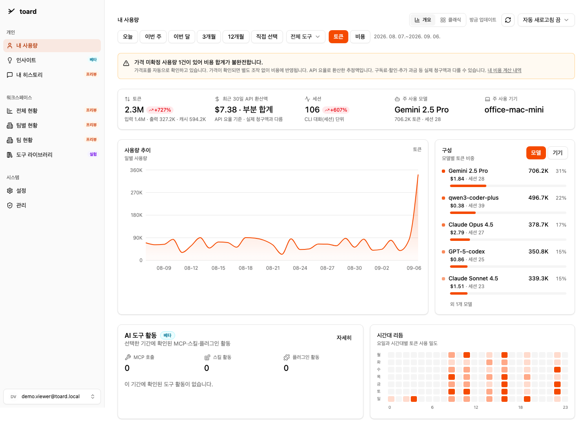
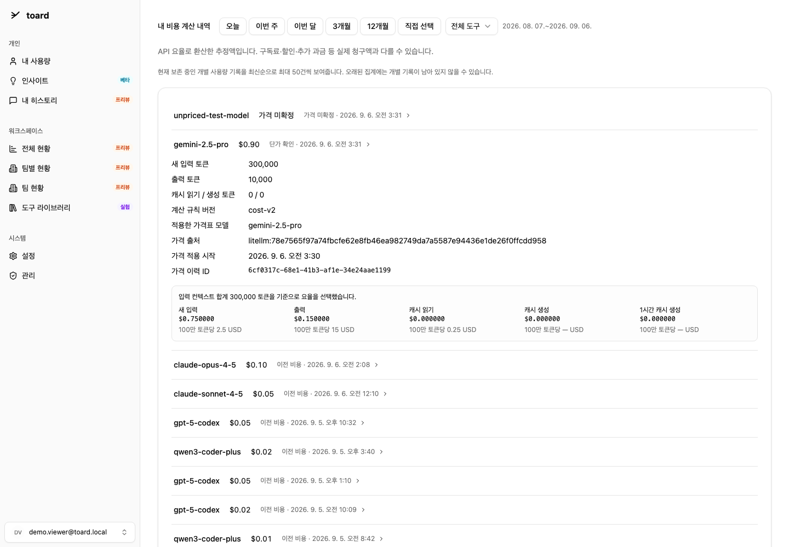
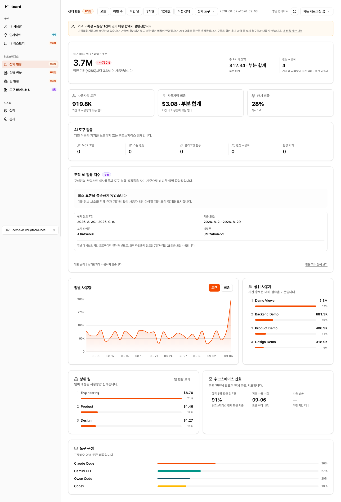

설치 전에 둘러보세요
별도 계정 없이 보는 정적 화면 미리보기입니다. 이름·사용량은 모두 테스트 데이터이며, 이미지 속 버튼은 작동하지 않습니다.
내 사용량
도구와 기기별 사용량, API 환산액, 이전 기간과의 변화를 확인합니다. 미확정 가격이 섞이면 부분 합계임을 표시합니다.

내 비용 계산 내역
토큰, 적용한 모델과 가격 출처, 계산 규칙 버전을 확인합니다. 재현할 근거가 없는 과거 금액은 새로운 계산 결과처럼 표시하지 않습니다.

조직 현황
조직 사용량, 도구 구성과 팀 현황을 모아 봅니다. 활용 지수는 표본이 적으면 숫자를 노출하지 않습니다.
